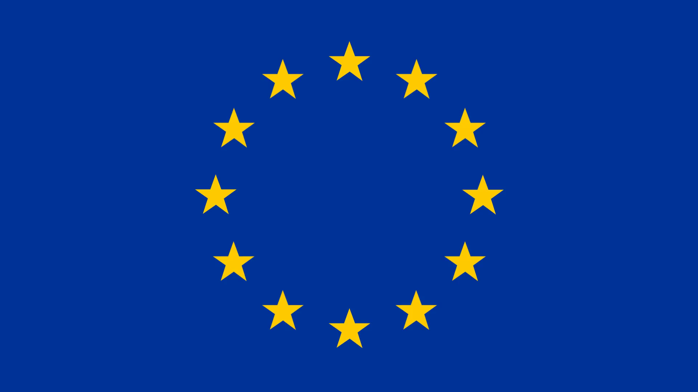

Aqui encontrará diversos projetos dos quais fazemos parte.
Centros Recuperação de Animais Selvagens

Erasmus+
Embaixadores da Floresta
Empresas e Biodiversidade
Floresta Comum
LIFE na QUERCUS
SAVE!
Tejo Internacional
Centros de Recuperação de Animais Selvagens
Desde a sua fundação que a Quercus recebe, um pouco por todo o país,
animais selvagens feridos e debilitados a necessitarem de apoio
veterinário e outros cuidados com vista a sua recuperação.
O objectivo principal dos centros de recuperação é a receção de
animais selvagens debilitados, sua recuperação e devolução ao meio
natural. A recuperação dos animais tem como finalidade última
contribuir para a conservação da Natureza, sendo dada prioridade a
animais de espécies ameaçadas. Desta forma os centros constituem
também uma fonte importante de informação permanente sobre os factores
de ameaça às populações de fauna. Poderão também ser realizados,
paralelamente, estudos relativos à biologia das espécies, programas de
reprodução em cativeiro, acções de educação ambiental e acções de
formação, sempre que estas actividades não interfiram com o processo
de recuperação dos animais.
Erasmus+
Trata-se de um projeto de parceria entre organizações de diversos
países para fortalecer os conhecimentos e boas práticas do sector
vitivinícola na proteção da biodiversidade, associada direta ou
indiretamente a esta atividade.
Trata-se de um projeto de parceria entre organizações de diversos países
para fortalecer os conhecimentos e boas práticas do sector vitivinícola
na proteção da biodiversidade, associada direta ou indiretamente a esta
atividade.
O projeto decorre de 2015 a 2018 e o parceiro técnico da Quercus é a
ADVID, Associação para o Desenvolvimento da Viticultura Duriense, do
cluster dos vinhos do Douro, que tem desenvolvido um trabalho e
investigação de destaque no que concerne à biodiversidade associada à
vinha.
Consumidor Informado, Consumidor Poupado
O Projeto “Consumidor informado consumidor poupado” pretende
implementar durante o ano de 2019 duas atividades distintas, mas
complementares, com o objetivo de combater a iliteracia energética e
informar os consumidores mais vulneráveis sobre estratégias de
poupança e consumo responsável de recursos que resultem em ganhos
tanto financeiros como ambientais.
Uma das componentes do projeto irá focar-se particularmente no
interior do País, inspirando-se no modelo de um dos projetos mais bem
sucedidos do Grupo de Energia e Alterações Climáticas da Quercus (o
“EcoFamílias”). Seguindo um plano de ação de cariz menos digital e
mais próximo dos cidadãos, esta atividade pretende acompanhar
diretamente os hábitos de consumo energético, e também de água, de 10
agregados familiares, durante 12 meses, residentes em regiões do
interior do país. O objetivo é realizar um diagnóstico do seu perfil e
histórico de consumo de água e energia nas suas habitações, a partir
de visitas presenciais para levantamento de dados, a partir dos quais
será avaliado o potencial de poupança dessas famílias pela alteração
de hábitos de consumo e eventual substituição de equipamentos por
modelos mais eficientes.
Pretende-se, deste modo, formar cidadãos mais conscientes para o
consumo de energia e água, promovendo eficiência e redução do consumo
destes recursos nas habitações, abrangendo a utilização de
equipamentos, a iluminação, o aquecimento de águas sanitárias, o
consumo de eletricidade, água e gás e também medidas para melhorar o
conforto higrotérmico das suas habitações, tirando partido dos
princípios da climatização passiva e da construção sustentável.
A segunda componente do projeto relaciona-se com um dos projetos mais
reconhecidos da Quercus, a rubrica de sensibilização ambiental Minuto
Verde, emitida todos os dias úteis na RTP1 desde 2006. O objetivo é
utilizar a abrangência da rubrica e o alcance deste meio de
comunicação e realizar 10 episódios do Minuto Verde que transmitam
conselhos e/ou iniciativas relevantes no âmbito da defesa do
consumidor e simultaneamente do ambiente:
serviços públicos essenciais (consumo de água, energia elétrica e
gás natural;
tratamento de águas residuais e gestão de resíduos sólidos urbanos;
acesso a transportes públicos);
consumidores em situação de vulnerabilidade (acesso a bens
alimentares e não alimentares; dicas faça você mesmo/estratégias de
reutilização; combate ao desperdício alimentar;
iniciativas/plataformas solidárias)
informação sobre a legislação aplicável à defesa do consumidor
(benefícios e incentivos fiscais existentes; tarifas especiais para
famílias numerosas ou carenciadas; publicidade indesejável; etc.)
Estes 10 episódios terão uma exibição mensal e serão posteriormente
divulgados nas redes sociais e outros canais da Quercus (VIMEO;
QUERCUS TV).
Criar Bosques
CRIAR BOSQUES é um projecto da Quercus que visa criar e cuidar de
bosques de espécies autóctones, árvores e arbustos originais da flora
portuguesa. Através da colaboração com várias entidades e voluntários
colhem-se sementes para produzir plantas, plantam-se árvores/arbustos,
cuidam-se de bosques, recupera-se a floresta portuguesa.
Embaixadores da Floresta
No Ano Internacional da Floresta o CRE_PORTO preparou um novo roteiro
de formação prática para os cidadãos que querem conhecer e colaborar
na protecção e promoção da floresta autóctone na Área Metropolitana do
Porto.
O curso realiza-se nos dias 17 e 24 de Setembro (das 9h00 às 17h00) e
inclui visitas guiadas, actividades práticas no campo e provas de
produtos.
O programa dos Embaixadores da Floresta integra a Academia
Metropolitana da Sustentabilidade, uma iniciativa do Centro Regional
de Excelência em Educação para o Desenvolvimento Sustentável da Área
Metropolitana do Porto (CRE_PORTO).
Organização: Universidade Católica do Porto em parceria com a Forestis
– Associação Florestal de Portugal, Área Metropolitana do Porto,
Condomínio da Terra (Quercus).
Colaboração na 1ª Edição: Câmara Municipal da Maia, Câmara Municipal
de Santo Tirso, Associação dos Silvicultores do Vale do Ave (ASVA),
Fundo para a Protecção dos Animais Selvagens (FAPAS), Associação
Florestal do Vale do Sousa (AFVS), Autoridade Florestal Nacional
(AFN), Gabinete de Arqueologia da Câmara Municipal de Vila Nova de
Famalicão. Esta iniciativa integra os Cursos de Verão da Católica.
Inscrições on-line. Taxa de inscrição: €25
O Certificado de Embaixador da Floresta será emitido para os
participantes que estejam presentes nas duas sessões deste curso.
Empresas e Biodiversidade
A missão deste projecto é contribuir para a mobilização das empresas
relativamente à integração da Biodiversidade nas suas estratégias,
políticas, gestão, operações e reporting e proporcionar um conjunto de
recursos às mesmas, colaborando também na melhoria e adaptação desses
recursos sempre que possível.
Este projecto insere-se na visão ou objectivo último da promoção da
sustentabilidade através da actuação responsável das empresas,
contribuindo no sentido de valorizar as empresas e produtos que melhor
respeitem a conservação da Natureza, nomeadamente os serviços
prestados pela biodiversidade e ecossistemas. Através deste projecto,
a Quercus pretende assumir não um papel de protagonista, mas sim de
elemento facilitador e catalizador de mudanças, que serão
necessariamente protagonizadas pelas empresas.
WasteAPP
WasteApp surge com a necessidade de informar o cidadão dos destinos de
vários resíduos que não podem ser colocados nos ecopontos. A Quercus
recebe diariamente pedidos de esclarecimento acerca do destino de
variados resíduos.
A Wasteapp indica-lhe o local mais proximo onde os colocar para
reutilização e reciclagem. Pretendemos reunir o maior número de
destinos existentes em Portugal.
Implementado desde 2008, o Green Cork é o projeto da Quercus de
recolha de rolhas de cortiça para reciclagem. É desenvolvido em
parceria com a Amorim, o Continente, o Dolce Vita, escolas,
escuteiros, municípios, empresas de recolha de resíduos, adegas,
produtores de vinho e outras entidades que localmente tornam este
projeto um sucesso. Tem por objetivos principais recolher rolhas e
financiar a plantação de árvores autóctones através do Floresta Comum.
O Green Cork é um projeto que funciona em ciclo, da árvore vem a
cortiça, a reciclagem dá novos usos à cortiça que antes estava na
rolha, e ainda permite que se plantem novas árvores. O que vem da
natureza volta à natureza. Através das verbas que a Quercus recebeu
pela entrega para reciclagem de cerca de 295 toneladas de rolhas de
cortiça, já foram plantadas cerca de 476 mil árvores (dados de 2016).
Colaborar com a Quercus e participar no Green Cork é simples, é só
guardar as rolhas de cortiça e entregá-las num dos pontos de entrega
do projeto. 2012 foi o ano em que se recolheram mais rolhas de cortiça
em Portugal, mas mesmo assim, num mercado onde entram cerca de 320
milhões de rolhas por ano, o Green Cork não atingiu 6% de recolha
dessas rolhas. Se 6% parece pouco, na realidade é muito. Representa o
esforço voluntário de uma comunidade que se envolveu de mangas
arregaçadas na valorização dum produto português e na floresta
autóctone. Ainda se podem recolher muitas mais rolhas e plantar muitas
mais árvores.
No ano 2013, o Green Cork foi honrado pela União Europeia como um dos
melhores projetos de combate às alterações climáticas no âmbito no
concurso 'Um Mundo que me Agrada'.
Floresta Comum
Embora as florestas estejam localizadas num determinado espaço
geográfico, as alterações à estrutura bio-físico-químico do sistema
terrestre que realizam são benéficas para o equilíbrio ecossistémico
não só local, mas também global e ao longo de várias gerações. Pelo
facto dos serviços de ecossistema disponibilizados pelas florestas
serem de interesse comum, queremos construir a herança de uma FLORESTA
COMUM a várias gerações.
O Floresta Comum é por isso, um programa de fomento e incentivo à
criação de uma floresta autóctone com altos índices de biodiversidade
e de produção de serviços de ecossistema.
O Minuto Verde Vai À Escola
O projeto-piloto “O Minuto Verde Vai à Escola” pretende envolver
ativamente a comunidade escolar, nomeadamente alunos do 8º ano do 3º
Ciclo do Ensino Básico, de 6 escolas dos distritos de Lisboa e
Portalegre, na elaboração de conteúdos audiovisuais sobre as mais
diversas temáticas ambientais, inspirados no formato da rubrica
“Minuto Verde”, que a Quercus produz e apresenta há mais de 10 anos no
Bom Dia Portugal da RTP1, aos dias úteis antes das 8h, 9h e 10h.
Os alunos serão convidados a elaborar um guião, com base num kit
pedagógico fornecido pelo projeto às escolas, sobre um tema ambiental
da atualidade, dando um conselho prático para reduzir a pegada
ecológica no quotidiano.
As melhores propostas de guiões, que serão elaborados no âmbito do
trabalho curricular da disciplina de “Ciências Físicas e Naturais”,
com a orientação do docente e da equipa do projeto, serão selecionadas
para a posterior gravação dos conteúdos audiovisuais.
LIFE
Os projetos seguintes são co-financiados pelo programa
LIFE da União Europeia, um instrumento que apoia projectos de conservação ambiental e ação
climática.
Écotono
O objectivo central do projecto “Ecotone – Gestão de habitats
ripícolas para a conservação de invertebrados ameaçados” é
conceber, implementar e avaliar metodologias de gestão activa do
habitat prioritário ― 91E0 *Florestas aluviais de Alnus
glutinosa e Fraxinus excelsior (Alno-Padion, Alnion incanae,
Salicion albae) – para incrementar populações de odonatos
(Oxygastra curtisii, Gomphus graslinii e Macromia splendens) e
melhorar o estado de conservação das populações de náiades
ameaçadas [Margaritifera margaritifera e Unio tumidiformis
(=Unio crassus)].
Conservação de Habitats Naturais e Semi-Naturais nas Serras de
Aire e Candeeiros
O projecto pretende conservar quatro habitats prioritários [6110
*Prados rupícolas calcários ou basófilos da Alysso-Sedion albi,
(6210) prados secos seminaturais e facies arbustivas em
substrato calcário (Festuco-Brometalia) (*importantes habitats
de orquídeas), (6220) *Subestepes de gramíneas e anuais da
Thero-Brachypodietea e 8240 *Lajes calcárias], na Serra de Aire,
através do controle selectivo da vegetação herbácea e arbustiva,
utilizando meios mecânicos, bem como recorrendo ao pastoreio
extensivo com cabras de raça serrana (variedade ribatejana),
adequando estas acções às necessidades de conservação dos
valores em presença. Será também incentivada a colheita
sustentável e a comercialização de plantas aromáticas,
medicinais e condimentares.
Procurar-se-á dinamizar, de forma gradual, a criação de uma
economia de simbiose alicerçada no incremento da qualidade de
vida das populações locais e garantir a conservação dos habitats
prioritários no longo prazo. Pretende-se também que o projecto
envolva parceiros locais, demonstrando que é possível conservar
a biodiversidade recorrendo ao uso sustentável dos recursos
naturais, de forma a garantir suporte económico para a
continuação das acções de conservação e assim dar um contributo
importante para a implementação da Rede Natura 2000, cuja
finalidade é assegurar a longo prazo a conservação de espécies e
habitats ameaçados na União Europeia.
Higro
O projecto HIGRO tem como objectivo definir uma metodologia para
a recuperação e a conservação activa de dois habitats
prioritários da Rede Natura 2000: urzais-tojais [4020
(*Charnecas húmidas atlânticas temperadas de Erica ciliaris e
Erica tetralix)] e cervunais higrófilos [6230 (*Formações
herbáceas de Nardus, ricas em espécies, em substratos siliciosos
das zonas montanas (e das zonas submontanas da Europa
continental)]. Para verificar quais os métodos que melhor
promovem a diversidade de plantas vasculares
endémicas/localizadas (e.g. Genista berberidea e Gentiana
pneumonanthe) e invertebrados ameaçados (e.g. Phengaris alcon),
serão executadas várias acções: controle da vegetação arbustiva
e herbácea, restauro da hidrologia natural, instalação de
vedações amovíveis e promoção do pastoreio de percurso.
Deste modo, pretende-se alcançar um equilíbrio vantajoso do
ponto de vista ecológico entre os dois habitats, de forma a
manter ou aumentar a sua área de ocupação total e, por
conseguinte, contribuir para a implementação da Rede Natura 2000
que visa a conservação a longo prazo de espécies e habitats
ameaçados na União Europeia.
O projecto teve início em Setembro de 2010 e termina em Junho de
2014. Após esse período dá-se início ao plano de conservação
pós-LIFE durante mais cinco anos.
Ações Inovadoras contra o uso ilegal de venenos em áreas-piloto da
Europa Mediterrânica
O projeto LIFE “Ações Inovadoras contra o uso ilegal de venenos
em áreas-piloto da Europa Mediterrânica” foi implementado com o
objetivo de demonstrar procedimentos e práticas que contribuam
para travar a perda de biodiversidade devido ao uso ilegal de
venenos na União Europeia (UE). Este projeto é também conhecido
como LIFE “Inovação contra envenenamentos”, com o código LIFE09
NAT/ES/000533. Desenvolveu se entre 2010 e 2014, em Portugal,
Espanha e Grécia e foi co-fnanciado pelo Programa LIFE da
Comissão Europeia. Actualmente algumas acções do projecto
continuam a ser implementadas pelos parceiros nas respectivas
áreas piloto.
Taxus
O projeto LIFE TAXUS pretende intervir sobre os bosquetes de
Teixo – habitat 9580 *Florestas mediterrânicas de Taxus baccata
- formações umbrófilas típicas das margens de cursos de água
montanhosos em vales encaixados, com caráter pontual e
relíquial, dominadas pelo teixo e incluem diversas espécies,
tais como: Azevinho (Ilex aquifolium), Vidoeiro (Betula
celtiberica), Carvalho-alvarinho (Quercus robur),
Carvalho-negral (Quercus pyrenaica), o Escalheiro (Pyrus
cordata) e a Tramazeira (Sorbus aucuparia).
Este é um habitat ameaçado pelo fogo, o corte, o pastoreio e a
invasão por espécies exóticas, cuja espécie dominante – o teixo
- é uma espécie dioica, ou seja, tem estruturas reprodutoras
unissexuadas, estando as masculinas e as femininas em indivíduos
diferentes, alcança grande longevidade, e atualmente ocorre
apenas de forma espontânea nos SIC PTCON0001 “Peneda-Gerês” e
SIC PTCON0014 “Serra da Estrela.
Live Adapt
Uma equipa de investigadores internacionais (Espanha, Portugal e
França) vai desenvolver, durante os próximos quatro anos,
modelos de adaptação às alterações climáticas aplicados à
indústria pecuária no sul da Europa. Os impactos negativos que
as alterações climáticas geram na pecuária afectam grandemente o
sul da Europa, resultando em situações de stress animal (altas
temperaturas, p.e.), consequente diminuição da produtividade e
custos extras por parte dos produtores, que ficam assim
obrigados a fazer maiores esforços para manter a qualidade de
vida do animal e a qualidade do produto. A escassez e baixa
qualidade da água, a deterioração das pastagens devido a ondas
de calor, e a erosão do solo observada após as chuvas
torrenciais, agravam ainda mais este cenário. Para enfrentar
esta situação que compromete a sustentabilidade da pecuária
extensiva, a equipa multidisciplinar que integra o projecto tem
como principais objectivos a implementação de uma estratégia
baseada em tecnologias e práticas inovadoras que permitam a
adaptação do sector às alterações climáticas.
As linhas de acção prendem-se, por exemplo, com inovações na
captação e uso da água, ou com o uso de tecnologias de
informação e comunicação (TICs) para a gestão da pecuária. A
identificação de boas práticas em modelos de produção animal que
contemplem a eficiência energética, a gestão de resíduos, a
gestão da água e a melhoria da biodiversidade fortalecerão a
sustentabilidade ambiental a longo prazo. Para tornar a mudança
possível, o LiveAdapt prestará formação e consultadoria aos
produtores de gado de modo a adaptarem suas explorações às
alterações climáticas.
A Associação de Defesa do Património de Mértola e QUERCUS de
Portugal; o Institut de l’Elevage de France; e a Fundação
EntreTantos, a SmartDehesa SL, a Gestiona Global, a Agronatura
Servicios Florestales y Agrarios e a Fedehesa de España
completam o painel de parceiros do consórcio. A UCO, além de
coordenar o LiveAdapt, contribui com investigadores dos
departamentos de Produção Animal, Saúde Animal, Botânica,
Ecologia e Fisiologia Vegetal e Engenharia Florestal; Fedehesa
estará responsável por desenvolver o plano de comunicação do
projecto, o que permitirá disseminar pelo sector afectado e o
público em geral, as práticas seleccionadas. O projecto tem um
orçamento de pouco mais de dois milhões de euros, co-financiado
pelo programa LIFE17 da União Europeia, um instrumento que apoia
projectos de conservação ambiental e acção climática.
SAVE!
O projeto SAVE-Valorização de Serviços Ambientais de Agro-Ecossistemas
em Áreas Protegidas de Montanha pretende produzir, divulgar e difundir
conhecimento e informação sobre os serviços ambientais de carácter de
bem púbico proporcionados pelo Parque Natural da Serra da Estrela.
O projeto SAVE é promovido pela Quercus, Associação Nacional de
Conservação da Natureza em parceria com a Universidade de
Trás-os-Montes e Alto Douro (UTAD) que assume a coordenação
científica. É financiado pelo Programa da Rede Rural Nacional (PRRN).
O projeto iniciou-se em Fevereiro de 2011 e tem uma duração prevista
de 16 meses.
Parque Natural do Tejo Internacional
A Quercus tem desenvolvido actividades diversas nesta região desde
1987, mantendo uma campanha constante que culminou com a criação no
ano 2000 do Parque Natural do Tejo Internacional, que esperamos possa
ser um ponto de partida para a preservação dos valores em presença
neste região.
Levantamentos e monitorização de fauna, acções de divulgação e
educação ambiental , recepção de grupos escolares e outros grupos
informais, edição de publicações, criação de percursos e actividades
práticas de conservação são algumas das actividades que decorrem em
toda a região mas que têm especial ênfase nas áreas que gerimos.
Com efeito a Quercus possui quase 600 ha nesta região, parte dos quais
na freguesia do Rosmaninhal no concelho de Idanha–a–Nova e outra parte
correspondente ao Monte Barata, herdade localizada nas freguesias de
Malpica do Tejo e Monforte da Beira no concelho de Castelo Branco.
Desde meados dos anos oitenta que vários elementos da Quercus
começaram a percorrer a área do rio Tejo Internacional em busca dos
veados e das grandes aves de rapina que aqui ocorrem. Em 1987, a
Quercus em conjunto com a sua congénere ADENEX da Extremadura
espanhola, lançou a campanha para a criação de uma zona protegida ao
longo deste troço fronteiriço do rio Tejo. Treze anos depois, parte
dessa área foi finalmente classificada como Parque Natural do Tejo
Internacional. É esta região percorrida pelo Tejo ao entrar no
território nacional que o convidamos a conhecer nas páginas que se
seguem.
Ao longo dos anos, a Quercus adquiriu diversas parcelas de terreno num
total que ronda os 600 ha, criou estruturas de acolhimento e dinamizou
uma série de actividades ligadas à conservação da Natureza, à educação
ambiental e ao turismo natureza, contribuindo por um lado para o
melhor conhecimento e divulgação desta região raiana e por outro para
que se preserve o seu rico património natural.
A área habitualmente designada por Tejo Internacional fica situada na
província da Beira Baixa, distrito de Castelo Branco, no extremo Sul
do concelho de Castelo Branco (freguesias de Malpica do Tejo e
Monforte da Beira) e no extremo sul e leste do concelho de
Idanha-a-Nova (freguesias do Rosmaninhal, Salvaterra do Extremo e
Segura).
No território português, corresponde a uma faixa de aproximadamente 40
Km confinante com o rio Tejo, que serve aqui de fronteira física e
administrativa entre os dois países ibéricos, vindo daí a designação
de Tejo Internacional.
Esta área integra os troços finais dos rios Erges e Ponsul e da
ribeira do Aravil, as escarpas e encostas fluviais sobranceiras ao
Tejo, assim como a zona planáltica circunvizinha mais ou menos
acidentada.
Ecocasa - Energia e Clima
É dentro dos edifícios que passamos a maioria do tempo. O consumo de
energia dos edifícios, incluindo todo o seu ciclo de vida, representa
36 % do consumo de energia em todo o mundo – na União Europeia o valor
é superior à média mundial (40 %) – e cerca de 40 % das emissões
diretas e indiretas de dióxido de carbono.
O setor energético, com principal destaque para as opções relacionadas
com a climatização, apresenta o mais elevado potencial de poupança,
com base em melhorias simples, mas fundamentais: a utilização de
caixilharias eficientes, as colocações de estores nos locais
necessários, entre outras medidas, promovem de forma decisiva um
correto isolamento das casas.
A adoção de medidas de eficiência hídrica é também essencial. A
redução de caudal nas torneiras pode gerar poupanças na ordem dos 30 a
45 % no consumo de água, originando também poupança de energia.
De acordo com a Diretiva (UE) 2018/844, que altera a Diretiva
2010/31/UE relativa ao desempenho energético dos edifícios, estes têm
até 2021 para assegurar o uso de quantidades quase nulas de energia
para climatização, assim como para o aquecimento de água. Neste
contexto, o projeto pretende, além da componente de sensibilização e
aconselhamento, apresentar soluções concretas e modificar
comportamentos e hábitos na gestão, renovação ou aquisição de uma
casa.
Pretende-se ainda que este projeto possa estar interligado a outros
projetos de parceiros da Quercus ou projetos internos da associação
que possam ser uma mais valia na disseminação de informação nestas
temáticas. Assim, este projeto pretende também, ao longo dos anos,
desenvolver trabalho e alargar o seu âmbito de atuação a outras áreas
como consumo sustentável, por exemplo. De forma a alavancar campanhas
de comunicação associaremos ao MINUTO VERDE da Quercus temas, que
serão depois introduzidos pelo mesmo em momentos oportunos. Numa
perspetiva de aproveitar sinergias internas, os projetos de Educação
ambiental que a Quercus estiver a desenvolver em escolas ou outros
ambientes de âmbito escolar, irão integrar as temáticas desenvolvidas
no ECOCASA. Dar a conhecer os problemas, apontar alternativas e
incentivar à mudança de comportamentos no quotidiano será o objetivo
primordial deste projeto. Pelo que, sempre que se justifique e à
medida que se forem trabalhando os temas alavancados ao projeto, serão
veiculadas notas e comunicados de imprensa que serão disponibilizados
online em todos os meios web da Quercus e do projeto ECOCASA.
O ECOCASA, um projeto que se pretende evolutivo, apresentará em breve
quatros simuladores de poupança: eficiência hídrica, eficiência
energética, certificação energética de edifícios e gestão de resíduos.
Simulador de eficiência hídrica: visa encontrar soluções para
poupança de água.
Simulador de eficiência energética: tem o objetivo de reunir hábitos
de consumo e eletrodomésticos mais eficientes.
Simulador de certificação energética de edifícios: é útil para
determinar a classe energética de cada casa.
Simulador de gestão de resíduos: serve para definir as melhores
opções sobre resíduos, atingindo-se em casa o que se designa por
‘resíduo zero’.